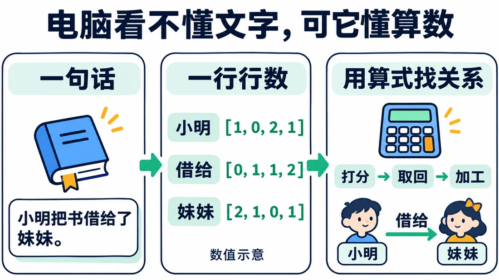
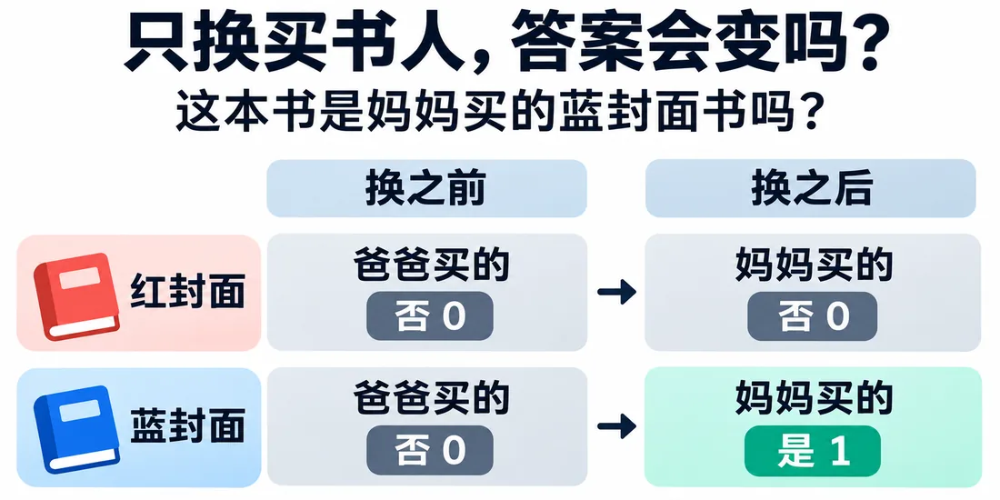
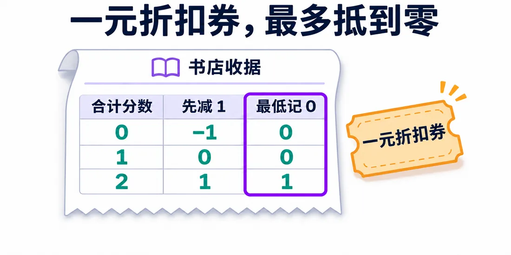
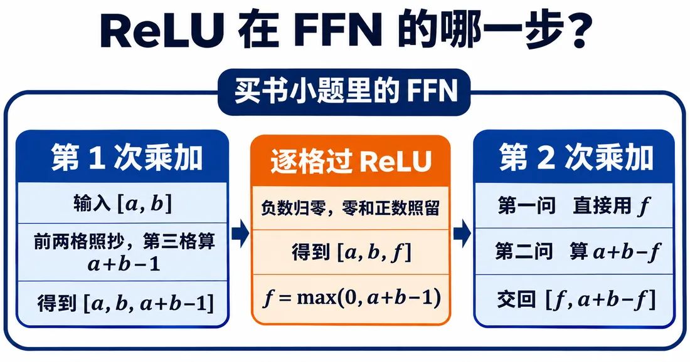
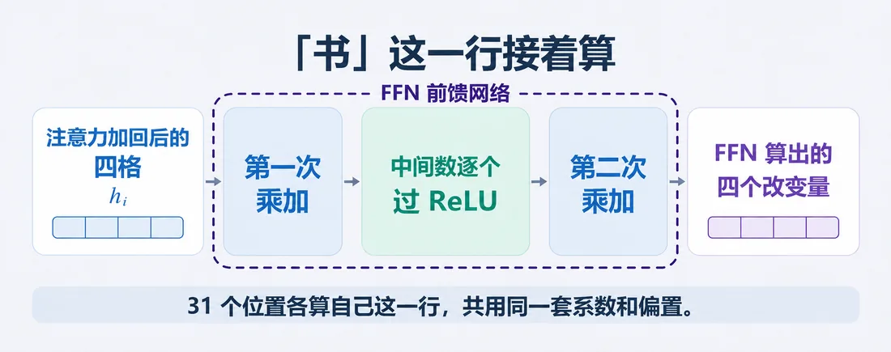
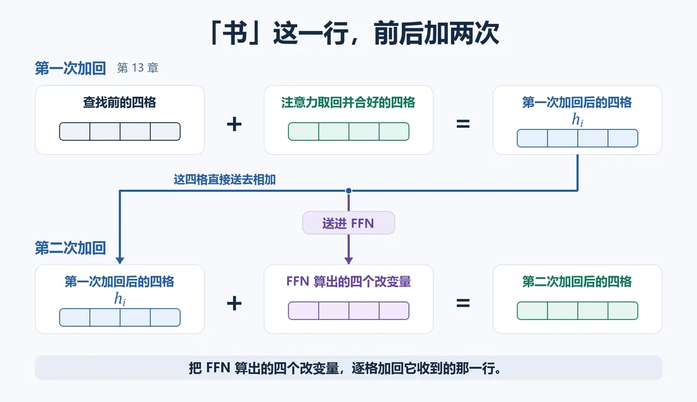

我们在这儿
在平行世界里，我们已经把语文问题一步步变成算术：
这一篇看光靠一条固定乘加，够不够用。

这一篇要解决用 FFN 和 ReLU，处理“两条线索都满足”的判断。
大概阅读约 10–13 分钟
电脑要写“妈妈买的蓝封面书”，得说的是同一本书。
先把两条线索分开：
是就记 1，否则记 0。
给它们各乘一个固定系数：
再把两项加起来。
先把问题摆具体。电脑要判断“小明借出去的是妈妈买的那本蓝封面书”，就得同时确认两件事：
我们拿原句做两组对照，只把买书人从爸爸换成妈妈，其余不动。
两组对照的结果：
下面这张图，就是这两组对照。

换买书人时，前后差恰好是 wa。
两组题目要求不一样：
一个数没法同时等于 0 和 1。
a+b 数的是对上几条：
想把 1 变 0、2 变 1，正好都减 1。
可一条都没对上时，0－1＝-1，给出了负数。
所以分两步：
就像书店的一元折扣券：
店家不会倒找。
这条规矩叫整流线性单元（ReLU）。
它的规则是：
它在 0 处拐弯，不是一条直线。
动手点完，再看静态图：不够的部分都会被压到 0。

第一问 f 算“两条都对上了吗”。第二问问“至少对上一条了吗”。
f＝0 时，有两种可能：
这两种情况要分别答 0 和 1。所以原来的 a、b 还得留下来。
第一次乘加，算出 a、b、a+b−1。
逐格过 ReLU 后，留下 a、b、f。其中：
第二次乘加：
为什么 a+b−f 能答第二问？看三种情况：
这正好是第二问要的数。
如果拿掉中间的 ReLU，两次乘加就能合成一次。第一问又会卡在老问题上。

拿“书”更新好的四格做输入，安排两次乘加，算一组增量。
第一次：
第二次：
这套接法叫前馈网络（FFN）。
31 个位置各算自己那一行，共用同一套系数和偏置。
照上一篇的办法，FFN 算出的改变量再逐格加回它收到的那一行。加完仍四格，交给下一轮。

第一张图先看每一行怎么算。再把它放回整个编码器：

图先把位置关系摆清楚。下面再用分步演示，把整条编码器流程走一遍。
这一篇收个尾
这一篇拿到：带 ReLU 的 FFN，能先算中间判断再输出改变量。
下一篇接着看：处理数值尺度越滚越大的问题。